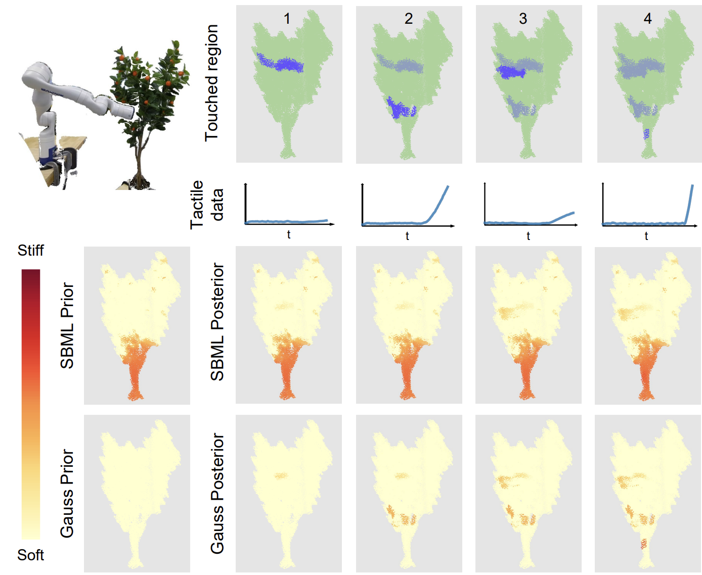
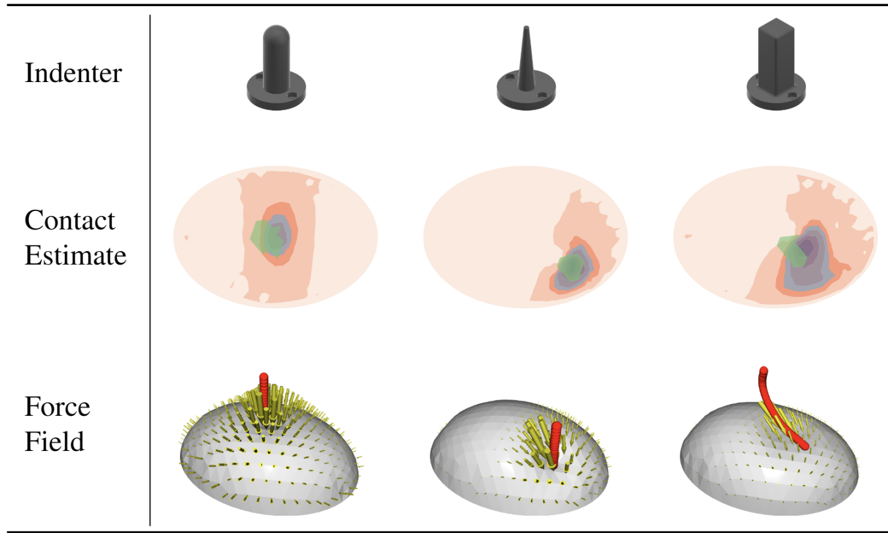
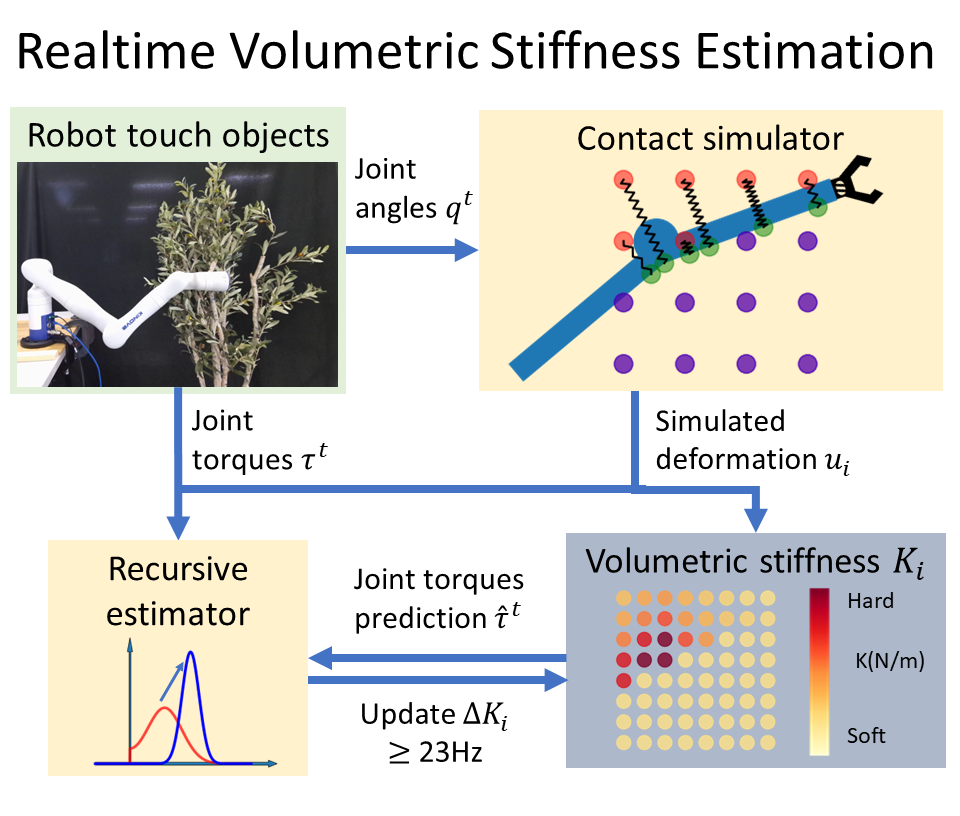
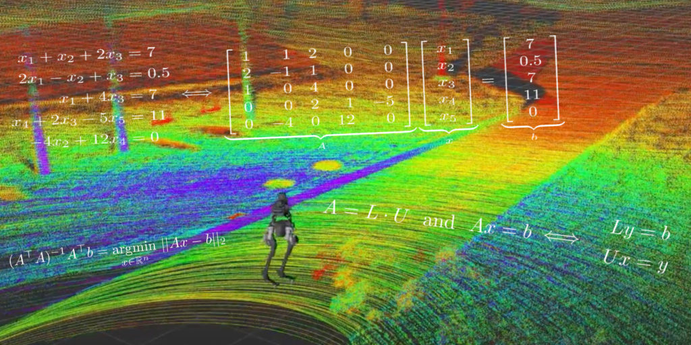

|
I am a fourth-year PhD student majoring in Computer Science at University of Illinois at Urbana-Champaign. My advisor is Prof. Kris Hauser . I have dual undergraduate degree in Computer Science from University of Michigan and Electrical and Computer Engineering from Shanghai Jiao Tong University. |
{kind=link}
|
My goal is to build intelligent and safe robots. I work on robotic tactile perception and manipulation. |
|
|
|  |
Structured Bayesian Meta-Learning for Data-Efficient Visual-Tactile Model Estimation
Shaoxiong Yao, Yifan Zhu and Kris Hauser, Conference on Robot Learning (CoRL), 2024 Project Webpage |
|  |
3D Force and Contact Estimation for a Soft-Bubble Visuotactile Sensor Using FEM
Jing-Chen Peng, Shaoxiong Yao and Kris Hauser, International Conference on Robotics and Automation (ICRA), 2024 Open-source code |
|  |
Estimating Tactile Models of Heterogeneous Deformable Objects in Real Time
Shaoxiong Yao and Kris Hauser, International Conference on Robotics and Automation (ICRA), 2023 Earlier workshop version ICRA2022, 2nd Workshop on Representing and Manipulating Deformable Objects |
|
|
|  | Instructional Aid, ROB101 Computational Linear Algebra Fall 2020 |
| Teaching Assistant, Vv214 Linear Algebra Spring 2019 |
|
I write notes, you may find one of them useful: linear algebra and multivariate calculus, underactuated robotics. I translated Prof. Steve LaValle's Bio into Chinese. |
 |
Teach your robot to dance, EECE467 Final Project Winter 2021 |
|
Updated in Nov. 2023. Thanks Jon Barron for this amazing template. |